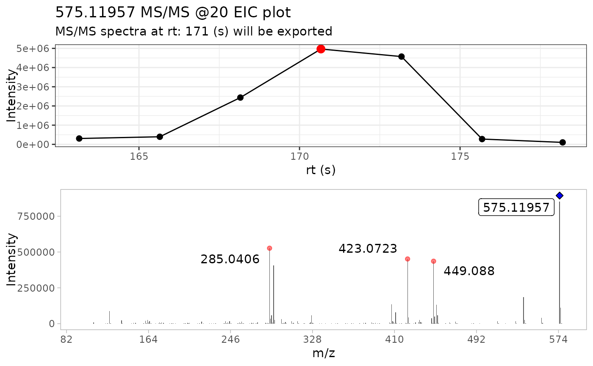
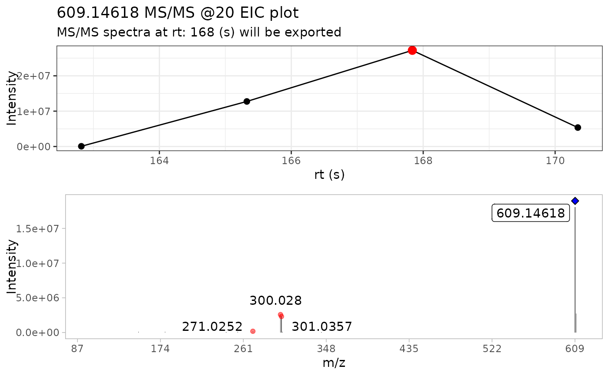

Extract the most MS/MS intense scan from batch spectra
Source:R/batch_extract_MS2.R
batch_extract_MS2.RdThis function takes multiple spectra imported with the batch_import_mzxml()
function. Then, it passes the spectra to a version of extract_MS2().
Briefly, this function takes a series of MS/MS spectra, selects the
most intense scan and extracts the MS/MS spectra from it.
Additionally, it plots the MS/MS TIC chromatogram and colors
the most intense scan with red circle, and the precursor ion with a blue
diamond
Arguments
- batch_spect
a list created by
batch_import_mzxml()- verbose
a boolean indicating if the MS/MS TIC chromatogram is displayed
- out_list
a boolean expressing if the output is a list containing the MS/MS spectra plus the TIC chromatogram (out_list = TRUE), or only the data frame with the MS/MS spectra (out_lists = FALSE).
Examples
# Select the csv file name and path
batch_file <- system.file("extdata", "batch_read.csv",
package = "MS2extract"
)
# Read the data frame
batch_data <- read.csv(batch_file)
# File paths for Procyanidin A2 and Rutin
ProcA2_file <- system.file("extdata",
"ProcyanidinA2_neg_20eV.mzXML",
package = "MS2extract"
)
Rutin_file <- system.file("extdata",
"Rutin_neg_20eV.mzXML",
package = "MS2extract"
)
# Add file path - User should specified the file path -
batch_data$File <- c(ProcA2_file, Rutin_file)
# Checking batch_data data frame
batch_data
#> Name Formula Ionization_mode min_rt max_rt COLLISIONENERGY
#> 1 Procyanidin A2 C30H24O12 Negative 163 180 20 eV
#> 2 Rutin C27H30O16 Negative 162 171 20 eV
#> File
#> 1 /home/runner/work/_temp/Library/MS2extract/extdata/ProcyanidinA2_neg_20eV.mzXML
#> 2 /home/runner/work/_temp/Library/MS2extract/extdata/Rutin_neg_20eV.mzXML
# Using batch import to import multiple compounds
batch_compounds <- batch_import_mzxml(batch_data)
#>
#> ── Begining batch import ───────────────────────────────────────────────────────
#>
#> ── -- ──
#>
#> • Processing: ProcyanidinA2_neg_20eV.mzXML
#> • Found 1 CE value: 20
#> • Remember to match CE velues in spec_metadata when exporting your library
#> • m/z range given 10 ppm: 575.11376 and 575.12526
#> • Compound name: Procyanidin A2_Negative_20
#>
#> ── -- ──
#>
#> • Processing: Rutin_neg_20eV.mzXML
#> • Found 1 CE value: 20
#> • Remember to match CE velues in spec_metadata when exporting your library
#> • m/z range given 10 ppm: 609.14002 and 609.15221
#> • Compound name: Rutin_Negative_20
#>
#> ── End batch import ────────────────────────────────────────────────────────────
# Checking dimension by compound
# Procyanidin A2: 24249 ions
# Rutin: 22096 ions
purrr::map(batch_compounds, dim)
#> $`Procyanidin A2_Negative_20`
#> [1] 17829 6
#>
#> $Rutin_Negative_20
#> [1] 11475 6
#>
# Use extract batch extract_MS2
batch_extracted <- batch_extract_MS2(batch_compounds,
verbose = TRUE,
out_list = FALSE
)
#> Scale for x is already present.
#> Adding another scale for x, which will replace the existing scale.
#> Warning: `position_stack()` requires non-overlapping x intervals.

#> Scale for x is already present.
#> Adding another scale for x, which will replace the existing scale.
#> Warning: `position_stack()` requires non-overlapping x intervals.
